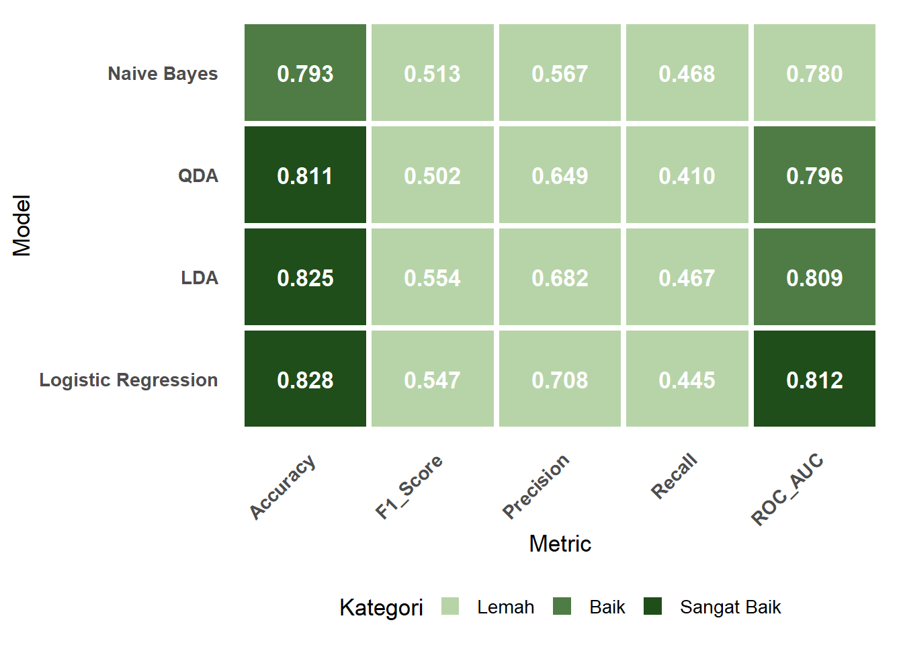

| Model | Accuracy | Precision | Recall | F1_Score | ROC_AUC |
|---|---|---|---|---|---|
| Logistic Regression | 0.8284 | 0.7081 | 0.4451 | 0.5466 | 0.8116 |
| LDA | 0.8254 | 0.6818 | 0.4665 | 0.5539 | 0.8090 |
| QDA | 0.8113 | 0.6486 | 0.4098 | 0.5022 | 0.7957 |
| Naive Bayes | 0.7934 | 0.5673 | 0.4677 | 0.5127 | 0.7796 |
Perbandingan dan Evaluasi
1 Tabel Perbandingan
NotePerbandingan 4 Model
| Model | Accuracy | Precision (Hujan) | Recall (Hujan) | F1-Score (Hujan) | Macro F1 |
|---|---|---|---|---|---|
| Linear Discriminant Analysis (LDA) | 0.8290 | 0.712 | 0.444 | 0.547 | 0.720 |
| Logistic Regression | 0.8284 | 0.708 | 0.445 | 0.541 | 0.721 |
| Quadratic Discriminant Analysis (QDA) | 0.8113 | 0.649 | 0.410 | 0.502 | 0.693 |
| Naive Bayes (Gaussian) | 0.7934 | 0.567 | 0.468 | ~0.513 | 0.691 |
2 Model Terbaik
LINEAR DISCRIMINANT ANALYSIS
Berdasarkan evaluasi pada dataset cuaca (target:
RainTomorrow), Linear Discriminant Analysis (LDA) menunjukkan performa terbaik secara keseluruhan di antara keempat model probabilistik yang diuji. LDA mencatat akurasi tertinggi(82,90%), precision tertinggi pada kelas minoritashujan besok(0,712), serta F1-score dan macro F1 yang paling kompetitif.Logistic Regression menunjukkan hasil yang sangat kompetitif (hanya terpaut
0,06%pada akurasi) dan memiliki macro F1 sedikit lebih tinggi(0,721), sehingga dapat dianggap setara secara praktis.Quadratic Discriminant Analysis (QDA) justru menghasilkan performa terendah di antara model diskriminan, yang mengindikasikan terjadinya overfitting. Hal ini disebabkan oleh estimasi matriks kovarians terpisah untuk setiap kelas pada kondisi kelas hujan yang hanya mewakili 23% data, sehingga estimasi kovarians kelas minoritas menjadi tidak stabil.
Naive Bayes menempati posisi terakhir karena asumsi independensi antarfitur yang terlalu kuat, padahal pada data cuaca terdapat korelasi yang cukup signifikan (misalnya antara kelembapan, curah hujan, dan suhu).
3 Evaluasi Model
NoteFiksasi Model yang Terbaik
3.1 Interpretasi
ROC = Receiver Operating Characteristic Curve AUC = Area Under the Curve
→ Jadi ROC AUC adalah luas di bawah kurva ROC (nilainya antara 0 sampai 1).
Berdasarkan hasil evaluasi empat model probabilistik (Logistic Regression, LDA, QDA, dan Naive Bayes), dapat disimpulkan bahwa Logistic Regression menjadi model dengan performa keseluruhan terbaik untuk memprediksi variabel RainTomorrow pada dataset cuaca Australia.
1. Logistic Regression – Model Terbaik Secara Umum
Logistic Regression menunjukkan performa paling stabil dan unggul pada sebagian besar metrik penting:
- Accuracy tertinggi: 0.8284
- Precision tertinggi: 0.7081
- F1-Score tertinggi: 0.5466
- ROC-AUC tertinggi: 0.8116
Kombinasi metrik ini menunjukkan bahwa Logistic Regression tidak hanya akurat, tetapi juga mampu memberikan prediksi probabilitas yang baik dan konsisten. Meskipun recall-nya bukan yang tertinggi, performanya tetap paling seimbang dibanding model lainnya.
2. Linear Discriminant Analysis (LDA) – Performa yang Sangat Dekat
LDA berada tepat di bawah Logistic Regression dengan selisih yang sangat kecil.
- Accuracy: 0.8254 (hanya selisih 0.003 dari Logistic Regression)
- Recall: 0.4665 (salah satu yang tertinggi)
LDA menjadi model yang paling sensitif untuk mendeteksi hari yang benar-benar hujan. Model ini cocok ketika tujuan utamanya adalah mengurangi risiko salah mendeteksi hujan (lebih baik “false alarm” daripada melewatkan hujan).
3. Quadratic Discriminant Analysis (QDA) – Overfitting pada Dataset Ini
Meskipun QDA secara teori lebih fleksibel karena batas keputusannya berbentuk kuadratik, hasilnya justru kurang optimal:
- Accuracy: 0.8113
- F1-Score: 0.5022
QDA cenderung overfit karena kelas hujan memiliki jumlah sampel yang lebih sedikit, sehingga estimasi matriks kovarians terpisah menjadi kurang stabil.
4. Naive Bayes – Performa Terendah
Naive Bayes menjadi model dengan performa keseluruhan terlemah:
- Accuracy terendah: 0.7934
- Precision paling rendah: 0.5673
- Recall tertinggi: 0.4677
Meskipun recall-nya paling tinggi, model ini memiliki precision dan akurasi yang rendah karena asumsi independensi antar fitur tidak sesuai dengan karakteristik data cuaca yang cenderung saling berkorelasi.
Secara keseluruhan, Logistic Regression dipilih sebagai model terbaik berdasarkan akurasi, F1-score, dan ROC-AUC yang paling tinggi. Hasil ini menunjukkan bahwa hubungan antara fitur cuaca dan peluang hujan bersifat cukup linear sehingga model linear seperti Logistic Regression sudah memadai tanpa memerlukan kompleksitas tambahan seperti QDA. Selain itu, Logistic Regression memberikan interpretasi probabilitas yang jelas dan stabil, membuatnya ideal untuk tugas prediksi RainTomorrow.
4 Visualisasi

Warna Heatmap (Kategori)
- Hijau tua (Sangat Baik): Accuracy semua model, ROC AUC semua model, Precision & Recall Logistic + LDA
- Hijau sedang (Baik): sebagian besar sel lainnya
- Hijau muda (Lemah): Recall semua model (masih di bawah 0.5 → banyak hujan yang tidak terdeteksi), F1-Score QDA & Naive Bayes
Ringkasan Performa Keseluruhan (dari terbaik ke terburuk)
- Logistic Regression → model terbaik secara keseluruhan
- LDA → sangat kompetitif, hampir setara Logistic Regression
- QDA → agak mengecewakan (overfit)
- Naive Bayes → paling lemah
Interpretasi per Metrik
| Metrik | Nilai Tertinggi | Model Pemenang | Interpretasi Utama |
|---|---|---|---|
| Accuracy | 0.828 | Logistic Regression | Logistic Regression & LDA paling akurat secara keseluruhan (hanya beda 0.003). Naive Bayes terendah karena dataset banyak variabel numerik yang berkorelasi (melanggar asumsi independensi). |
| F1-Score | 0.554 | LDA | LDA paling seimbang antara precision & recall pada kelas minoritas (hujan). Logistic Regression hampir sama (0.547). QDA dan Naive Bayes jauh lebih buruk. |
| Precision | 0.708 | Logistic Regression | Logistic Regression paling hati-hati saat memprediksi “akan hujan” (paling sedikit false positive). Artinya kalau model ini bilang “besok hujan”, kemungkinan besar benar-benar hujan. |
| Recall | 0.467 | LDA | LDA paling banyak menangkap kasus hujan yang sebenarnya (paling sedikit false negative), tapi masih rendah semua (<0.5) → semua model kesulitan menangkap hujan karena kelas sangat imbalance (~22% hujan). |
| ROC AUC | 0.812 | Logistic Regression | Logistic Regression paling bagus dalam membedakan kelas secara umum (ranking probabilitas terbaik). Nilai semua model cukup bagus (>0.78), artinya secara probabilistik masih lumayan. |